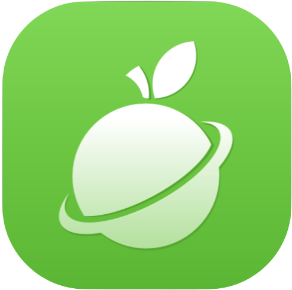
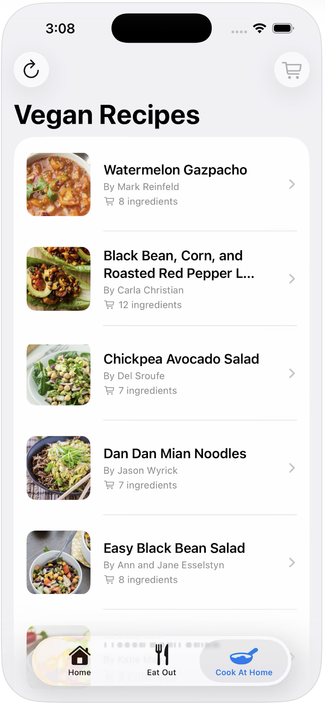
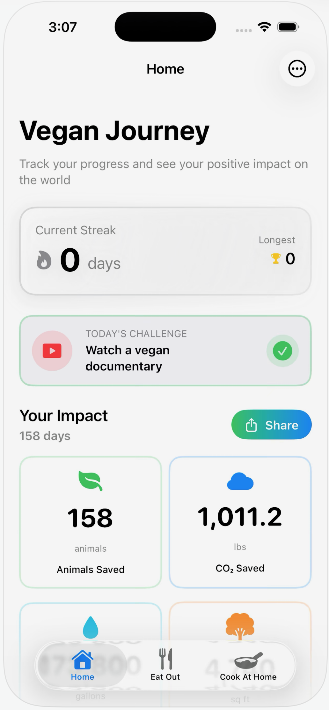
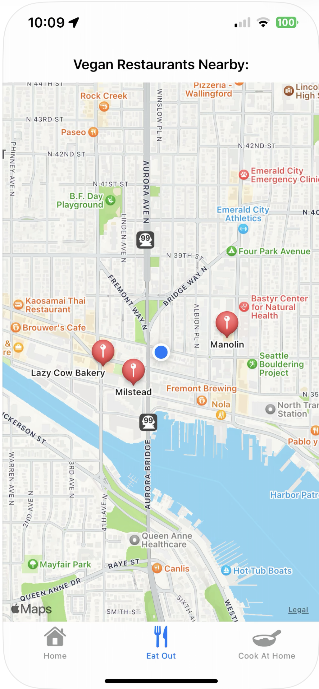

Build Your Streak
Track your vegan days, build momentum, and never lose sight of your progress. Every day counts.

GoingVeganGoingVegan: Vegan Tracker
GoingVegan helps you build streaks, track nutrition, and see the real-world impact of your plant-based choices. Free on iOS.
App Store link opens in a new tab.
Track your vegan days, build momentum, and never lose sight of your progress. Every day counts.
Get insights into plant-based meals so you can eat well and feel confident you're getting what you need.
Discover animals helped, water saved, and CO₂ reduced in real time as your streak grows.
Built for beginners, recent converts, and committed vegans who want meaningful daily progress.

Browse vegan recipes with ingredients and quick filters so meal planning is easier and your routine stays fun.

Track your current streak, complete daily challenges, and monitor cumulative impact from one clean home view.

Use the built-in map to discover vegan-friendly spots near you and make eating out easier.

Tap through ready-to-use meal ideas when you need quick inspiration, from salads to full dinner options.

See how many days you've logged, check your longest streak, and keep momentum visible every time you open the app.

Whether traveling or staying local, the map helps you quickly find places that support your plant-based goals.
Use this quick calculator to estimate your real-world impact from plant-based choices.
These estimates are directional and based on public datasets and published research. Individual outcomes vary by region, baseline diet, and food sourcing choices.
These figures are estimates based on published research. Individual impact varies by diet and region.

Kevin went vegan in 2023 and couldn't find one app that handled streaks, nutrition confidence, and impact. So he built GoingVegan.
Early users consistently mention that streak visibility and impact numbers keep motivation high.
★★★★★
"I've been vegan for 3 months and this app kept me on track when I wanted to quit. The streak feature is weirdly addictive."
Sarah M. · 3 months vegan
★★★★★
"Finally an app that tracks what actually matters for vegans. Impact stats are what keep me motivated."
Alex R. · 1 year vegan
★★★★★
"The nutrition view gave me confidence that I was covering protein and iron without overthinking every meal."
Jordan K. · 6 months vegan
Quick answers before you start.
Published guides to support your first 90 days on a plant-based journey.
Data-backed breakdown plus a practical impact calculator you can use in seconds.
10 min read · Published
Read moreWhy streaks work for long-term behavior change and how to avoid perfection traps.
8 min read · Published
Read moreA practical guide to plant-based protein, meal structure, and confidence-building nutrition habits.
12 min read · Published
Read moreTrack your streaks, know your nutrition, and see the real impact of going plant-based. Free on iOS.
Download on the App Store